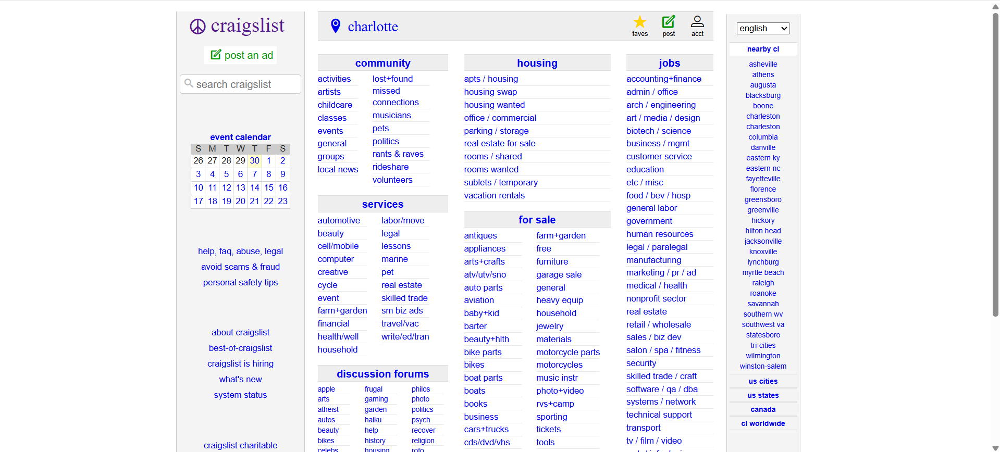
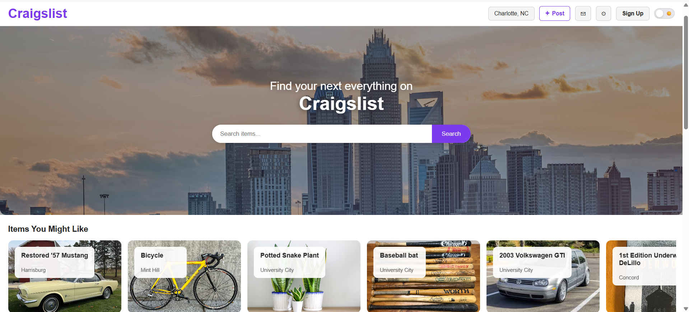

Craigslist UX/UI Redesign
This project focused on redesigning Craigslist to improve usability, navigation, and overall user experience while maintaining its core functionality as a classifieds platform.
Problem
Craigslist has remained largely unchanged for years, resulting in poor visual hierarchy, overwhelming text-based layouts, and inefficient navigation. Users often struggle to quickly find relevant categories or listings.
Goal
Redesign the interface to improve clarity, accessibility, and efficiency while preserving the simplicity that makes Craigslist recognizable.
My Role
UX Designer — research, wireframing, prototyping, and evaluation.
Key UX Issues Identified
- Poor visual hierarchy: Important actions are not emphasized
- Cluttered interface: Too many links with no structure
- Navigation difficulty: Users must scan excessively
- Outdated design patterns: Lacks modern usability standards
Weekly Progress
Below is a breakdown of how this redesign evolved throughout the semester:
Before vs After
Below is a comparison between the original Craigslist interface and our redesigned version focused on usability and visual clarity.
Original Interface

Dense text layout with minimal hierarchy, making navigation and scanning difficult for users.
Redesigned Interface

Improved layout with clear hierarchy, grouped categories, and better visual structure for faster navigation.